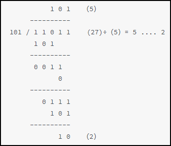

Principio del divisor (punto fijo)
Similar a la división decimal, el proceso de calcular 27 dividido por 5 es el siguiente:

El proceso de operación de división es el siguiente:
- (1) Tome los primeros bits de mayor peso del dividendo, con el mismo ancho de bits que el divisor (en el ejemplo son datos de 3 bits).
- (2) Compare los datos de mayor peso del dividendo con el divisor. Si el primero no es menor que el segundo, el bit correspondiente del cociente es 1, y la resta de ambos da el resto del primer paso; de lo contrario, el bit del cociente es 0, y el primero se toma directamente como resto.
- (3) Concatenar el resto del paso anterior con el bit más alto restante del dividendo (1 bit) para formar un nuevo dato, y luego comparar con el divisor. Se obtienen el nuevo cociente y el nuevo resto.
- (4) Repetir el proceso (3) hasta que el bit más bajo del dividendo también participe en el cálculo.
Cabe señalar que el ancho de bits del cociente debe ser el mismo que el del dividendo, porque el divisor podría ser 1.Por lo tanto, en el ejemplo de división manual anterior, al hacer la comparación del primer paso, se debe tomar el bit más alto de 27, que es 1 (3'b001), y compararlo con 3'b101.Según este proceso de cálculo, se diseña un divisor segmentado (pipeline) con ancho de bits configurable, donde el número de ciclos de latencia de la segmentación es igual al ancho de bits del dividendo.
Diseño del divisor
Diseño de la operación de un solo paso
En el cálculo de división de un solo paso, el ancho de bits del dividendo de un solo paso (señal dividend) debe ser 1 bit mayor que el ancho de bits del divisor original (señal divisor) para evitar desbordamiento.
Para facilitar la segmentación, la salida necesita registros para almacenar el divisor original (señales divisor y divisor_kp) y la información del dividendo (señales dividend_ci y dividend_kp).
El resultado de la operación de un solo paso es obtener el nuevo dato de cociente de 1 bit (señal merchant) y el resto (señal remainder).
Para obtener el resultado final de la división, el nuevo dato de cociente de 1 bit (señal merchant) también debe acumularse mediante desplazamiento con el resultado del cociente del ciclo anterior (merchant_ci).
El diseño de la unidad de operación de un solo paso es el siguiente (nombre de archivo: divider_cell.v):
Ejemplo
module divider_cell
#(parameter N=5,
parameter M=3)
(
input clk,
input rstn,
input en,
input [M:0] dividend,
input [M-1:0] divisor,
input [N-M:0] merchant_ci , //Cociente de salida de la etapa anterior
input [N-M-1:0] dividend_ci , //Divisor original
output reg [N-M-1:0] dividend_kp, //Información del dividendo original
output reg [M-1:0] divisor_kp, //Información del divisor original
output reg rdy ,
output reg [N-M:0] merchant , //Cociente de salida de la unidad de operación
output reg [M-1:0] remainder //Resto de salida de la unidad de operación
);
always @(posedge clk or negedge rstn) begin
if (!rstn) begin
rdy <= 'b0 ;
merchant <= 'b0 ;
remainder <= 'b0 ;
divisor_kp <= 'b0 ;
dividend_kp <= 'b0 ;
end
else if (en) begin
rdy <= 1'b1 ;
divisor_kp <= divisor ; //El divisor original se mantiene sin cambios
dividend_kp <= dividend_ci ; //Transmisión del dividendo original
if (dividend >= {1'b0, divisor}) begin
merchant <= (merchant_ci<<1) + 1'b1 ; //El cociente es 1
remainder <= dividend - {1'b0, divisor} ; //Calcular el resto
end
else begin
merchant <= merchant_ci<<1 ; //El cociente es 0
remainder <= dividend ; //El resto se mantiene sin cambios
end
end // if (en)
else begin
rdy <= 'b0 ;
merchant <= 'b0 ;
remainder <= 'b0 ;
divisor_kp <= 'b0 ;
dividend_kp <= 'b0 ;
end
end
endmodule
Instanciación de etapas de segmentación
Concatenar el resto (señal remainder) del cálculo de un solo paso con el bit correspondiente del dividendo original (señal dividend) de 1 bit, y usar el resultado como nuevo dividendo de un solo paso para la siguiente etapa de la unidad de cálculo de división.
Entre ellos, los datos del dividendo, el divisor y el cociente también deben transmitirse a la unidad de operación de la siguiente etapa.
La instanciación del módulo de etapas de segmentación para completar el diseño de la división es la siguiente (nombre de archivo: divider_man.v):
Ejemplo
//using 29/5=5...4
module divider_man
#(parameter N=5,
parameter M=3,
parameter N_ACT = M+N-1)
(
input clk,
input rstn,
input data_rdy , //Habilitación de datos
input [N-1:0] dividend, //Dividendo
input [M-1:0] divisor, //Divisor
output res_rdy ,
output [N_ACT-M:0] merchant , //Ancho de bits del cociente: N
output [M-1:0] remainder ); //Resto final
wire [N_ACT-M-1:0] dividend_t [N_ACT-M:0] ;
wire [M-1:0] divisor_t [N_ACT-M:0] ;
wire [M-1:0] remainder_t [N_ACT-M:0];
wire [N_ACT-M:0] rdy_t ;
wire [N_ACT-M:0] merchant_t [N_ACT-M:0] ;
//Inicializar la primera unidad de operación
divider_cell #(.N(N_ACT), .M(M))
u_divider_step0
( .clk (clk),
.rstn (rstn),
.en (data_rdy),
//Usar el bit más alto (1 bit) del dividendo como dividendo de la primera operación de un solo paso, rellenando los bits altos con 0
.dividend ({{(M){1'b0}}, dividend[N-1]}),
.divisor (divisor),
.merchant_ci ({(N_ACT-M+1){1'b0}}), //El cociente inicial es 0
.dividend_ci (dividend[N_ACT-M-1:0]), //Dividendo original
//output
.dividend_kp (dividend_t[N_ACT-M]), //Transmisión de la información del dividendo original
.divisor_kp (divisor_t[N_ACT-M]), //Transmisión de la información del divisor original
.rdy (rdy_t[N_ACT-M]),
.merchant (merchant_t[N_ACT-M]), //Resultado del cociente de la primera vez
.remainder (remainder_t[N_ACT-M]) //Resto de la primera vez
);
genvar i ;
generate
for(i=1; i<=N_ACT-M; i=i+1) begin: sqrt_stepx
divider_cell #(.N(N_ACT), .M(M))
u_divider_step
(.clk (clk),
.rstn (rstn),
.en (rdy_t[N_ACT-M-i+1]),
.dividend ({remainder_t[N_ACT-M-i+1], dividend_t[N_ACT-M-i+1][N_ACT-M-i]}), //Concatenación del resto con el dato de 1 bit del dividendo original
.divisor (divisor_t[N_ACT-M-i+1]),
.merchant_ci (merchant_t[N_ACT-M-i+1]),
.dividend_ci (dividend_t[N_ACT-M-i+1]),
//output
.divisor_kp (divisor_t[N_ACT-M-i]),
.dividend_kp (dividend_t[N_ACT-M-i]),
.rdy (rdy_t[N_ACT-M-i]),
.merchant (merchant_t[N_ACT-M-i]),
.remainder (remainder_t[N_ACT-M-i])
);
end // block: sqrt_stepx
endgenerate
assign res_rdy = rdy_t[0];
assign merchant = merchant_t[0]; //El último resultado del cociente se usa como cociente final
assign remainder = remainder_t[0]; //El último resto se usa como resto final
endmodule
testbench
Se toma un ancho de bits de 5 para el dividendo y de 3 para el divisor. Se agrega autoverificación en el testbench, descrito de la siguiente manera:
Ejemplo
module test ;
parameter N = 5 ;
parameter M = 3 ;
reg clk;
reg rstn ;
reg data_rdy ;
reg [N-1:0] dividend ;
reg [M-1:0] divisor ;
wire res_rdy ;
wire [N-1:0] merchant ;
wire [M-1:0] remainder ;
//clock
always begin
clk = 0 ; #5 ;
clk = 1 ; #5 ;
end
//driver
initial begin
rstn = 1'b0 ;
#8 ;
rstn = 1'b1 ;
#55 ;
@(negedge clk ) ;
data_rdy = 1'b1 ;
dividend = 25; divisor = 5;
#10 ; dividend = 16; divisor = 3;
#10 ; dividend = 10; divisor = 4;
#10 ; dividend = 15; divisor = 1;
repeat(32) #10 dividend = dividend + 1 ;
divisor = 7;
repeat(32) #10 dividend = dividend + 1 ;
divisor = 5;
repeat(32) #10 dividend = dividend + 1 ;
divisor = 4;
repeat(32) #10 dividend = dividend + 1 ;
divisor = 6;
repeat(32) #10 dividend = dividend + 1 ;
end
//Retrasar la entrada para facilitar la comparación de resultados en el mismo ciclo y completar la autoverificación
reg [N-1:0] dividend_ref [N-1:0];
reg [M-1:0] divisor_ref [N-1:0];
always @(posedge clk) begin
dividend_ref[0] <= dividend ;
divisor_ref[0] <= divisor ;
end
genvar i ;
generate
for(i=1; i<=N-1; i=i+1) begin
always @(posedge clk) begin
dividend_ref[i] <= dividend_ref[i-1];
divisor_ref[i] <= divisor_ref[i-1];
end
end
endgenerate
//Autoverificación
reg error_flag ;
always @(posedge clk) begin
# 1 ;
if (merchant * divisor_ref[N-1] + remainder != dividend_ref[N-1] && res_rdy) beginb //En el testbench se puede usar directamente el signo de multiplicación sin considerar los ciclos de operación
error_flag <= 1'b1 ;
end
else begin
error_flag <= 1'b0 ;
end
end
//module instantiation
divider_man #(.N(N), .M(M))
u_divider
(
.clk (clk),
.rstn (rstn),
.data_rdy (data_rdy),
.dividend (dividend),
.divisor (divisor),
.res_rdy (res_rdy),
.merchant (merchant),
.remainder (remainder));
//simulation finish
initial begin
forever begin
#100;
if ($time >= 10000) $finish ;
end
end
endmodule // test
Resultados de simulación
Como se muestra en la figura, los 2 datos de entrada, después de un retraso de ciclos igual al ancho de bits del dividendo, producen el resultado de división correcto. Además, se puede generar la salida en modo segmentado sin retrasos, lo que cumple con el diseño.
Haz clic para compartir notas
<p style="font-size:14px;">¡La nota debe ser una ampliación del contenido de este artículo!</p><br> <p style="font-size:12px;"><a href="../tougao.html" target="_blank">Para enviar un artículo, haga clic aquí</a></p> <p style="font-size:14px;"><a href="./runoob-user-test-intro.html" target="_blank">Cómo obtener el código de invitación de registro</a></p> <h3 class="text-muted"><i class="fa fa-info-circle" aria-hidden="true"></i> ¡Debe iniciar sesión antes de compartir notas! <a href=".." class="runoob-pop">Iniciar sesión</a></h3> <p><a href="./runoob-user-test-intro.html" target="_blank">Cómo obtener el código de invitación de registro</a></p>